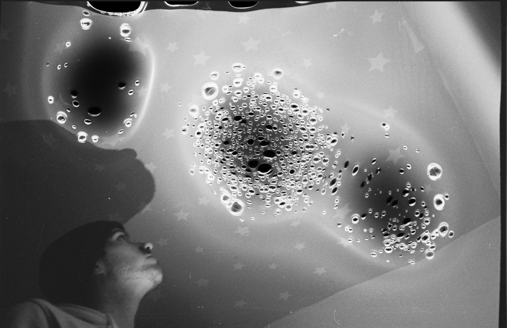

Partir en fumée
Projet photographique argentique
Dans le cadre de mon DUT Métiers du Multimédia et de l'Internet, j'ai eu la chance de pouvoir effectuer un semestre au Canada. Ce séjour m'a permis de découvrir la photographie argentique et réaliser le projet "Partir en fumée".
Ce projet consistait à brûler une pellicule une fois développée.
J'ai développé les pellicule moi-même et je les ai brûlés à l'aide d'un briquet. Il s'agit d'une étape délicate puisqu'il faut endommager la pellicule sans la détruire complétement.
J'ai ensuite numérisé les pelliules brûlées afin d'obtenir ses différents visuels. Travailler en argentique est une nouvelle façon d'apréhender la photograhpie.